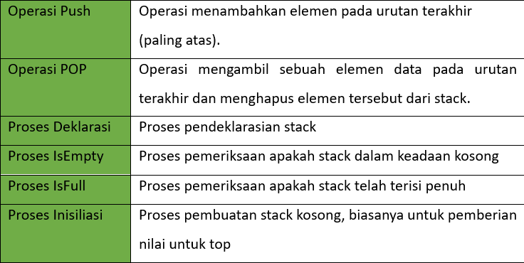
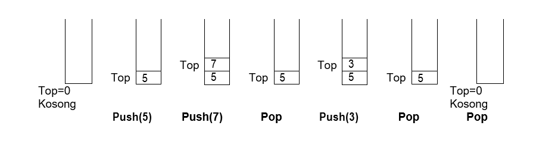
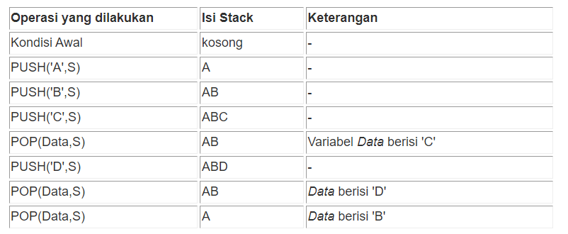

Fungsi dan Pengertian Stack atau Tumpukan
.jpg?1676969394592)
Dalam ilmu komputer, tumpukan adalah tipe data abstrak yang berfungsi sebagai kumpulan
elemen dengan dua operasi utama: Push, yang menambahkan elemen ke koleksi, dan Pop, yang
menghapus elemen yang paling baru ditambahkan.
Tumpukan dianggap sebagai struktur
data linier, atau lebih abstraknya kumpulan berurutan, dengan satu ujung menjadi
satu-satunya posisi di mana operasi push dan pop dapat terjadi, bagian atas tumpukan, dan
dipasang di ujung lainnya, bagian bawah.
Setelah kalian mengenal singkat tentang
Struktur Data, yaitu Struktur data adalah susunan data dalam
memori komputer. Struktur data memiliki kemampuan untuk mengatur, mengelola dan menyimpan
data dalam komputer untuk akses dan manipulasi yang efisien. Struktur data tidak hanya
digunakan untuk mengatur data tetapi juga digunakan untuk memproses, mengambil dan menyimpan
data.
Pengertian Stack atau Tumpukan

Stack atau tumpukan adalah tumpukan data yang tampak bertumpuk
dengan data lain, bentuk khusus dari linear list. Pada stack, penghapusan dan
penyisipan elemen hanya dapat dilakukan pada satu posisi yaitu akhir list.
Posisi ini disebut dengan puncak atau top dari stack. Posisi ini disebut dengan puncak atau
top dari stack. Stack atau tumpukan
pertama kali diusulkan pada tahun 1955, dan kemudian di patenkan pada tahun 1957 oleh
Friedrich L. Bauer Jerman.
Definisi Stack atau Tumpukan
Stack adalah struktur data linier yang dapat diakses hanya pada bagian akhir untuk memasukkan ataupun menghasilkan datanya. Karakteristik penting stack adalah bersifat LIFO (Last In First Out) artinya data yang terakhir masuk merupakan data yang akan keluar terlebih dahulu.
Persamaan Stack dan Queue
Persamaan antara stack dan queue adalah keduanya dapat diimplementasikan menggunakan struktur data linked list atau array. Contoh nyata dalam kehidupan sehari-hari yang dapat menggambarkan struktur data queue adalah barisan orang yang menunggu untuk membeli tiket di gedung bioskop.
Operasi Pada Stack
Dalam Stack ada beberapa operasi yang digunakan yaitu diantaranya adalah sebagai berikut.

Proses Operasi Pada Stack
Setelah mengenal operasi pada stack, disini kita akan belajar memahami alur dari proses
operasi pada stack yaitu diantaranya adalah sebagai berikut.

Disini terdapat beberapa proses operasi yang terjadi pada stack, yang dimana proses tersebut
menggunakan metode FIFO.
Penulisan Pada Stack
Dalam penulisan stack, stack tidak dituliskan secara bertumpuk tapi dengan kesepakatan
sebagai berikut.

- Elemen paling kanan adalah TOS (Top Of The Stack)
- Stack yang dipakai bernama S
- PUSH (S,B) berati memasukkan elemen B ke dalam stack S
-
POP (B,S) berati mengambil elemen dari stack S dan menaruh ke dalam
variabel B
Top Op The Stack
Ketika elemen baru ditambahkan ke
stack, elemen tersebut ditempatkan di atas elemen yang sudah ada. Demikian juga ketika
elemen dikeluarkan dari stack, elemen paling atas akan dihapus terlebih dahulu.
Contoh Penerapan Stack Dalam Kehidupan
- Tempat CD/DVD.
- Tumpukan buku di toko buku.
- Sistem pusat panggilan.
- Mekanisme Undo dan Redo di editor teks.
- Sejarah web browser disimpan dalam bentuk tumpukan.
- Log panggilan, E-mail, dan foto Google di galeri mana pun juga disimpan dalam bentuk tumpukan. Unduhan dan Notifikasi YouTube juga ditampilkan dalam format LIFO (yang terbaru muncul terlebih dahulu).
- Alokasi memori oleh sistem operasi saat menjalankan suatu proses.
Diskusi